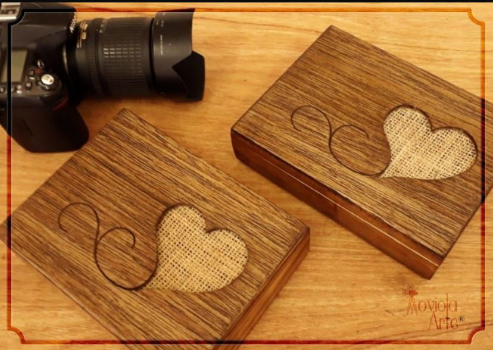

Todos os nossos pacotes são entregues por meio de uma caixa de madeira personalizada, que contén um pendrive com os arquivos digitais e fotografias (caso requisitado)

-
Pacote Básico
Making of da noiva e do noivo + Filme do casamento:
Ideal para registrar um dos momentos mais importantes da sua vida. -
Pacote Intermediário
Making of da noiva e do noivo + Filme do casamento + After party:
Além de registrarmos o seu momento especial, também captamos a alegria daqueles que são importantes para você. -
Pacote Completo
Making of da noiva e do noivo + Filme do casamento + After party + Fotografias:
O nosso pacote completo é ideal para guardar todos os momentos do seu grande dia. Além de todos os registros de vídeo, vamos eternizar os melhores momentos com fotografias incríveis!